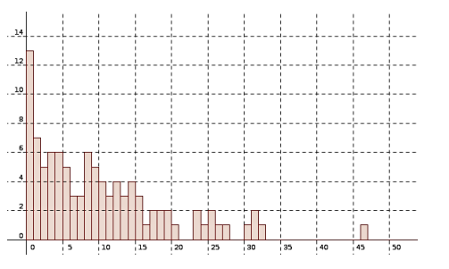

\(T =\)variable aléatoire donnant la durée de vie d'un atome.
1 Point de vue probabiliste
Modèle de désintégration = durée de vie sans vieillissement :
La probabilité qu'un atome soit « vivant » à l'intant \(t + h\) sachant qu'il est « vivant » à l'instant \(t\) ne dépend pas de \(t\) (quel que soit \(h\)) :
On en tire que1em: \(P (T > t + h) = P (T > t) \times P (T > h)\) pour tout \(t, h\)
La fonction \(G (x) = P (T > x)\) vérifie donc la propriété : \(G (x + y) = G (x) \times G (y)\) pour \(x, y \geqslant 0\)
Alors on peut alors démontrer qu'une telle fonction est une exponentielle. Plus précisément, il existe un réel \(\lambda > 0\) (\(> 0\) car une probabilité \(\in [0 ; 1]\)) tel que \(G (x) = e^{\- \lambda x}\).
On a donc \(P (T > t) = e^{\- \lambda t} \Longleftrightarrow P (T \leqslant t) = 1 - e^{- \lambda t}\).
Ce sont les formules de calcul des probabilités d'une loi exponentielle à densité \(f (t) = \lambda e^{\- \lambda t}\).
La valeur moyenne dans une loi exponentielle est \(\dfrac{1}{\lambda}\). C'est donc la durée moyenne de vie d'un atome avec ce modèle.
2 Point de vue statistique

En statistique, on réfléchit sur un échantillon.
Si on appelle \(N (t)\) le nombre d'atomes vivants à l'instant \(t\), on doit plutôt considérer ce nombre comme une moyenne, la moyenne de \(N\_{0}\) variables aléatoires dont chacune vaut 1 si l'atome est vivant et 0 sinon (=la valeur moyenne d'une variable suivant une loi binômiale).
Il faut d'abord préciser le modèle précédent :
- chaque atome se désintègre sans vieillissement
- les atomes ne s'influencent pas et au départ, on en a \(N\_{0}\).
A l'instant \(t\), chaque atome a une probabilité \(P (T > t) = e^{\- \lambda t}\) d'ếtre vivant. Comme on en a \(N\_{0}\), le nombre de survivants sera en moyenne \(N\_{0} e^{\- \lambda t}\). (loi binomiale : nombre répétitions × proba succès))
En gros, on peut considérer \(\dfrac{N (t)}{N\_{0}}\) comme la proportion de survivants à l'instant \(t\) et elle vaut \(P (T > t) = e^{\- \lambda t}\).
Expérimentalement, on va seulement observer un échantillon d'atomes qui donnera des valeurs expérimentales \(\hat{N} (t)\) « proches » de \(N (t)\).
On mesure les durées de vie d'atomes dans un échantillon et on place les résultats dans un histogramme : (en ordonnées: %tage de survivants à l'instant \(t\))
Sur un échantillon, on voit que les sommets des barres semblent suivre une fonction cste × exponentielle (en fait la densité). En effet, \(\hat{N} (t) \approx N (t) = N_{0} e^{\- \lambda t}\)
3 Point de vue différentiel
La vitesse instantannée de désintégration est :
\[ \lim _{h \longrightarrow 0} \dfrac{N (t) - N (t + h)}{h} = N' (t) \]
où \(N (t)\) est la variable aléatoire donnant le nombre moyen d'atomes vivants à l'instant \(t\) .
Expérimentalement, en estimant \(N (t)\) et \(N (t + h)\) sur un échantillon (on devrait dire : $\hat{N} (t) $et \(\hat{N} (t + h)\)), on doit pouvoir observer que cette vitesse est une constante × exponentielle ce qui veut dire que \(\dfrac{N' (t)}{N (t)}\) semble être une constante indépendante de t.
Or \(\dfrac{N' (t)}{N (t)} = \dfrac{\dfrac{N' (t)}{N\_{0}}}{\dfrac{N (t)}{N\_{0}}} = \- \dfrac{{\lim \_{h \longrightarrow 0}}\_{} P (t < T < t + h)}{P (t > h)} = \lim \_{t \longrightarrow 0} \- \dfrac{P (t < T < t + h)}{P (T > h)} = \- \lim \_{h \longrightarrow 0} P\_{(T > h)} (t < T < t + h)\)
On appelle λ cette constante$ \lim _{h \longrightarrow 0} P_{(T > t)} (t < T < t + h)$; on l'interpèrete comme :
- le taux de défaillance instantannée à l'instant \(t\) (c'est l'interprétation de \(\- \dfrac{N' (t)}{N (t)}\))
- la probabilité qu'à un instant \(t\) un vivant se désintègre.
On a donc : N'(t)N(t)\(= \- \lambda\) et donc \(N (t) = C e^{\- \lambda t}\) et finalement : \(N (t) = N\_{0} e^{\- \lambda t}\) c'est-à-dire \(\dfrac{N (t)}{N\_{0}} = e^{\- \lambda t}\)
Comme vu plus haut : \(\dfrac{N (t)}{N\_{0}} = P (T > t)\) donc \(P (T > t) = e^{\- \lambda t}\) et on retombe sur les formules de la loi exponentielle[^1].
[^1]: On peut démontrer qu'un objet qui subit un taux de défaillance constant \(\lambda\) a une durée de vie vérifiant la loi exponentielle de paramètre \(\lambda\) .